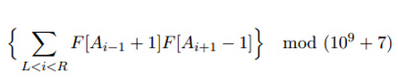

万老板希望在新的智能音乐播放设备IPOOD中，实现对波文件音质性能的评定。离散的波文件被考虑为长度为 N 的
整数序列：Al,A2,...,AN。所谓的音质性能检测，可以评定任何的一个区间范围 [L,R] ，音质性能取决于下述评
分：

其中 F 是可归纳定义的数列，满足 F[1]=1，F[2]=2 且 F[k+2]=F[k+l]+aF[k]+b 对于任何 k>=l 成立。其中 a
和 b 为正整系数。为了可以为用户提供更好的服务体验，并希望对给定的波文件进行修正优化。这一款设备中，
还应该支持对波文件的修改。对于给定的区间范围 [L,R] ，允许用户将 A[L] 至 A[R] 同时增加一，或同时减少
一。